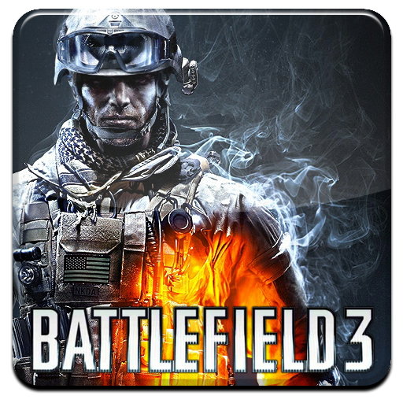

Select A Battlefield!
Select A Game Down Below!
Summary
"Battlefield 3" is a first-person shooter released in 2011, known for its modern military setting and emphasis on multiplayer gameplay. The single-player campaign follows Sergeant Henry "Black" Blackburn as he confronts a terrorist threat. Multiplayer supports up to 64 players and offers various modes, including Conquest and Team Deathmatch. Praised for its graphics and immersive gameplay, it's regarded as a standout title in the genre.
More Detail
"Battlefield 3," released in 2011, stands out as a defining title in the first-person shooter genre, particularly known for its stunning graphics, immersive gameplay, and expansive multiplayer experience. In the single-player campaign, players assume the role of Sergeant Henry "Black" Blackburn, a U.S. Marine Corps infantryman. The narrative unfolds across a series of missions set in diverse locations, ranging from urban streets to hostile deserts. Players face off against the People's Liberation and Resistance (PLR), a terrorist group threatening global stability. The campaign offers intense firefights, vehicular combat sequences, and cinematic set-pieces, immersing players in the chaos of modern warfare. However, it's the multiplayer component that truly shines in "Battlefield 3." Supporting up to 64 players on PC and 24 players on consoles, multiplayer battles are massive and dynamic. Players can choose from four distinct classes—Assault, Engineer, Support, and Recon—each with its own set of weapons, gadgets, and abilities. Teamwork is crucial, with players coordinating assaults, repairing vehicles, and providing cover fire to secure objectives. The hallmark game mode, Conquest, sees teams vying for control of key strategic points on the map, while Team Deathmatch offers more fast-paced, infantry-focused combat. Other modes, like Rush and Squad Rush, introduce additional objectives and challenges, ensuring diverse gameplay experiences. "Battlefield 3" introduced several new features to the series, including enhanced destruction mechanics, dynamic lighting, and improved player movement. The game's Frostbite 2 engine powered its breathtaking visuals, realistic sound design, and immersive environments, setting a new standard for graphical fidelity in the genre. Receiving critical acclaim upon release, "Battlefield 3" was praised for its intense multiplayer battles, robust gameplay mechanics, and technical achievements. It remains a beloved title among fans of the series and is considered a landmark entry in the franchise's history.